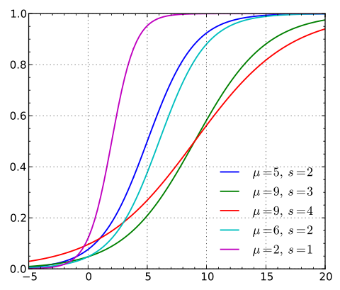

Logistic Regression
本文主要参考Andrew Ng老师的Machine Learning公开课，并用《机器学习实战》中的源码实现。
Logistic Regression基本原理
Logistic分布
Logistic Distribution的密度函数和概率分布函数如下：
$$\begin{equation}
f(x)=F’(x) = \frac{e^{-(x-\mu)/\gamma}} { \gamma (1+e^{-(x-\mu)/\gamma})^2 }
\end{equation}$$
$$\begin{equation}
F(x) = P(X \leqslant x) = \frac{1}{1+e^{-(x-\mu)/\gamma}}
\end{equation}$$
上式中$ \mu $是位置参数，$ \gamma > 0 $是形状参数。
下图是不同参数对logistic分布的影响，从图中可以看到可以看到 $ \mu $ 影响的是中心对称点的位置，$ \gamma $越小中心点附近增长的速度越快。而常常在深度学习中用到的非线性变换$ sigmoid $函数是逻辑斯蒂分布的$ \gamma=1,\mu=0 $的特殊形式。
二项Logistic Regression模型

逻辑回归是为了解决分类问题，根据一些已知的训练集训练好模型，再对新的数据进行预测属于哪个类。对于上图中的数据，逻辑回归的目标是找到一个有足够好区分度的决策边界，从而能够将两类很好的分开。
分离边界的维数与空间的维数相关。如果是二维平面，分离边界就是一条线（一维）。如果是三维空间，分离边界就是一个空间中的面（二维）。如果是一维直线，分离边界就是直线上的某一点。
假设输入的特征向量为$ x \in R^n $，$ Y $取值为$ 0，1 $。对于二维的空间，决策边界可以表示为$ w_1x_1+w_2x_2+b=0 $，假如存在一个例子使得$ h_w(x)=w_1x_1+w_2x_2+b>0 $，那么可以判断它类别为$ 1 $，这个过程实际上是感知机，即只通过决策函数的符号来判断属于哪一类。
而逻辑回归需要再进一步，它要找到分类概率$ P(Y=1)$与输入向量$ x $的直接关系，然后通过比较概率值来判断类别，而刚好上文中的logistic function能满足这样的要求，它令决策函数的输出值$ w^Tx+b = log \frac{P(Y=1|x)}{1−P(Y=1|x)} $，求解这个式子得到了输入向量$ x $下导致产生两类的概率为：
$$\begin{equation}
P(Y=1|x)=\frac{e^{w\cdot x+b}}{1+e^{w\cdot x+b}}
\label{eq:logistic1}
\end{equation}$$
$$\begin{equation}
P(Y=0|x)=\frac{1}{1+e^{w\cdot x+b}}
\end{equation}$$
其中$ w $称为权重，$ b $称为偏置，其中的$ w⋅x+b $看成对$ x $的线性函数，有时候为了书写方便，会将$ b $写入$ w $，即 $ w=(b,w_1,…,w_n) $ ，并取$ x=(1,x_1,…,x_n) $。然后对比上面两个概率值，概率值大的就是$ x $对应的类。
又已知一个事件发生的几率odds是指该事件发生与不发生的概率比值，二分类情况下即$ \frac{P(Y=1|x)}{P(Y=0|x)}=\frac{P(Y=1|x)}{1−P(Y=1|x)} $。取odds的对数就是上面提到的logistic function，$ logistic(P(Y=1|x))=log\frac{P(Y=1|x)}{1−P(Y=1|x)}=w⋅x $。从而可以得到一种对逻辑回归的定义，
**输出$ Y=1 $的对数几率是由输入$ x $的线性函数表示的模型，即逻辑斯蒂回归模型(李航.《统计机器学习》)。**而直接考察公式$\eqref{eq:logistic1}$可以得到另一种对逻辑回归的定义，**线性函数的值越接近正无穷，概率值就越接近1；线性值越接近负无穷，概率值越接近0，这样的模型是逻辑斯蒂回归模型(李航.《统计机器学习》)。**因此逻辑回归的思路是，先拟合决策边界(这里的决策边界不局限于线性，还可以是多项式)，再建立这个边界与分类的概率联系，从而得到了二分类情况下的概率。
有了上面的分类概率，就可以建立似然函数，通过极大似然估计法来确定模型的参数。设$ P(Y=1|x)=h_w(x) $，似然函数为$ \prod [h_w(x^{(i)})]^{y^{(i)}}[1-h_w(x^{(i)})]^{(1-y^{(i)})} $，对数似然函数为
$$\begin{eqnarray}
L(w) & = & \sum_{i=1}^{N}\log P(y^{(i)}|x^{(i)};w) \\
& = & \sum_{i=1}^{N}[y^{(i)}\log h_w(x^{(i)})+(1-y^{(i)})\log(1-h_w(x^{(i)}))]
\end{eqnarray}$$
优化方法
优化的主要目标是找到一个方向，参数朝这个方向移动之后使得似然函数的值能够减小，这个方向往往由一阶偏导或者二阶偏导各种组合求得。逻辑回归的损失函数是
$$\begin{eqnarray}
min J(w) &=& \min \frac{1}{m} \sum_{j=1}^{m}Cost(h_w(x^{(i)}),y^{(i)}) \\
&=& \min {-\frac{1}{m}[\sum_{i=1}^{m}y^{(i)}\log h_w(x^{(i)})+(1-y^{(i)})\log(1-h_w(x^{(i)}))]}
\end{eqnarray}$$
梯度下降法
最大似然估计就是要求得使$ J(θ) $取最大值时的$ θ $，但因此处的$ Cost(h_w(x^{(i)}),y^{(i)}) $添加了一个负号，所以必须用梯度下降法求解最佳参数。但若此处的$ Cost(h_w(x^{(i)}),y^{(i)}) $没有添加负号，则需要用梯度上升法求解最佳参数。
先把$ J(w) $对$ w_j $的一阶偏导求出来，且用$ g $表示。$ g $是梯度向量。
$$\begin{eqnarray}
g_j &=& \frac{\partial J(w)}{\partial w_j}\\
&=& -\frac{1}{m}\sum_{i=1}^{m}(\frac{y^{(i)}}{h_w(x^{(i)})} h_w(x^{(i)}) (1-h_w(x^{(i)}))(-x_{j}^{(i)}) + (1-y^{(i)})\frac {1}{1-h_w(x^{(i)})}h_w(x^{(i)})(1-h_w(x^{(i)}))x_j^{(i)}) \\
&=& -\frac{1}{m}\sum_{i=1}^{m}(y^{(i)}-h_w(x^{(i)}))x_{j}^{(i)})
\end{eqnarray}$$
梯度下降是通过$ J(w) $对$ w $的一阶导数来找下降方向（负梯度），并且以迭代的方式来更新参数，更新方式为
$$\begin{eqnarray}
w^{k+1}_j &=& w^k_j+α(-g_j)\\
&=&w^k_j+α \frac{1}{m}\sum_{i=1}^{m}(y^{(i)}-h_w(x^{(i)}))x_{j}^{(i)}
\label{eq:lr-gd}
\end{eqnarray}$$
$ k $为迭代次数。每次更新参数后，可以通过比较$||J(w^{k+1})−J(w^k)||$或者$ ||w^{k+1}−w^k ||$与某个阈值$ \epsilon $大小的方式来停止迭代，即比阈值小就停止。
如果采用梯度上升法来推到参数的更新方式，会发现式子与公式$\eqref{eq:lr-gd}$完全一样，所以采用梯度上升发和梯度下降法是一样的。
随机梯度下降法
从上面梯度下降法中的公式$\eqref{eq:lr-gd}$中可以看到，每次更新回归系数时都需要遍历整个数据集，如果有数十亿样本和成千上万个特征，则梯度下降法的计算复杂度就太高了。随机梯度下降法一次仅用一个样本点来更新回归系数：
$$\begin{equation}
w^{k+1}_j = w^k_j+α (y^{(i)}-h_w(x^{(i)}))x_{j}^{(i)}
\end{equation}$$
梯度下降过程向量化
约定训练数据的矩阵形式如下，$ x $的每一行为一条训练样本，而每一列为不同的特称取值：
$$\begin{equation}
x=
\left[
\begin{matrix}
x^{(1)}\\
x^{(2)}\\
\ldots\\
x^{(m)}
\end{matrix}
\right]
\left[
\begin{matrix}
x_0^{(1)} & x_1^{(1)} & \ldots & x_n^{(1)}\\
x_0^{(2)} & x_1^{(2)} & \ldots & x_n^{(2)}\\
\ldots & \ldots & \ldots & \ldots \\
x_0^{(m)} & x_1^{(m)} & \ldots & x_n^{(m)}
\end{matrix}
\right]
,
y=
\left[
\begin{matrix}
y^{(1)}\\
y^{(2)}\\
\ldots\\
y^{(m)}
\end{matrix}
\right]
\end{equation}$$
约定待求的参数θ的矩阵形式为：
$$\begin{equation}
\theta =
\left[
\begin{matrix}
\theta_1\\
\theta_2\\
\ldots\\
\theta_n
\end{matrix}
\right]
\end{equation}$$
先求$ x \cdot \theta $并记为$ A $：
$$\begin{equation}
A=x \cdot \theta
\left[
\begin{matrix}
x_0^{(1)} & x_1^{(1)} & \ldots & x_n^{(1)}\\
x_0^{(2)} & x_1^{(2)} & \ldots & x_n^{(2)}\\
\ldots & \ldots & \ldots & \ldots \\
x_0^{(m)} & x_1^{(m)} & \ldots & x_n^{(m)}
\end{matrix}
\right]
\cdot
\left[
\begin{matrix}
\theta_0\\
\theta_1\\
\ldots\\
\theta_n
\end{matrix}
\right]
\left[
\begin{matrix}
\theta_0x_0^{(1)} + \theta_1x_1^{(1)} + \ldots + \theta_nx_n^{(1)}\\
\theta_0x_0^{(2)} + \theta_1x_1^{(2)} + \ldots + \theta_nx_n^{(2)}\\
\ldots \\
\theta_0x_0^{(m)} + \theta_1x_1^{(m)} + \ldots + \theta_nx_n^{(m)}
\end{matrix}
\right]
\end{equation}$$
求$ h_\theta(x)-y $并记为$ E $：
$$\begin{equation}
E=h_\theta(x)-y=
\left[
\begin{matrix}
g(A^{(1)})-y^{(1)}\\
g(A^{(2)})-y^{(2)}\\
\ldots \\
g(A^{(m)})-y^{(m)}
\end{matrix}
\right]
\left[
\begin{matrix}
e^{(1)}\\
e^{(2)}\\
\ldots\\
e^{(m)}
\end{matrix}
\right]
=g(A)-y
\end{equation}$$
由上式可知$ h_\theta(x)-y $可以由$ g(A)-y $一次计算求得。
再来看一下公式$\eqref{eq:lr-gd}$的$\theta$更新过程：
$$\begin{eqnarray}
\theta_j &=& \theta_j + \alpha \sum_{i=1}^{m}(-e^{(i)})x_j^{(i)}\\
&=& \theta_j-\alpha\cdot(x_j^{(1)},x_j^{(2)},\ldots,x_j^{(m)})\cdot E
\end{eqnarray}$$
综合上面的式子有：
$$\begin{equation}
\theta = \theta - \alpha\cdot\frac{1}{m}\cdot x^T\cdot(g(x\cdot\theta)-y)
\end{equation}$$
正则化
由于模型的参数个数一般是由人为指定和调节的，所以正则化常常是用来限制模型参数值不要过大，也被称为惩罚项。一般是在目标函数(经验风险)中加上一个正则化项$ \Phi(w) $即
$$\begin{equation}
J(w) = -\frac{1}{m}[\sum_{i=1}^{m}y_ilog h_w (x_i) + (1-y_i)log(1-h_w(x_i))] + \lambda \Phi(w)
\label{eq:reg}
\end{equation}$$
而这个正则化项一般会采用L1范数或者L2范数。其形式分别为$ \Phi (w)=||x||_1 $和$ \Phi (w)=||x||_2 $。
首先针对L1范数$ \Phi (w)=|x| $，当采用梯度下降方式来优化目标函数时，对目标函数进行求导，正则化项导致的梯度变化当$ w_j > 0 $是取1，当$ w_j < 0 $时取-1.
从而导致的参数$w_j$减去了学习率与公式的乘积，因此当$ w_j > 0 $的时候，$ w_j$会减去一个正数，导致$ w_j $减小，而当$ w_j < 0 $的时候，$ w_j$会减去一个负数，导致$ w_j$又变大，因此这个正则项会导致参数$ w_j$取值趋近于0，也就是为什么L1正则能够使权重稀疏，这样参数值就受到控制会趋近于0。L1正则还被称为 Lasso regularization。
然后针对L2范数$\phi(w) = \sum_{j=1}^{n}w_j^2$，同样对它求导，得到梯度变化为$\frac{\partial \Phi(w)}{\partial w_j} = 2w_j$(一般会用$\frac{\lambda}{2}$来把这个系数2给消掉)。同样的更新之后使得$ w_j$的值不会变得特别大。在机器学习中也将L2正则称为weight decay，在回归问题中，关于L2正则的回归还被称为Ridge Regression岭回归。weight decay还有一个好处，它使得目标函数变为凸函数，梯度下降法和L-BFGS都能收敛到全局最优解。
需要注意的是，L1正则化会导致参数值变为0，但是L2却只会使得参数值减小，这是因为L1的导数是固定的，参数值每次的改变量是固定的，而L2会由于自己变小改变量也变小。而公式$\eqref{eq:reg}$中的$\lambda$也有着很重要的作用，它在权衡拟合能力和泛化能力对整个模型的影响，$\lambda$越大，对参数值惩罚越大，泛化能力越好。
《机器学习实战》代码
梯度上升法：
1 | def gradAscent(dataMatIn, classLabels): |
随机梯度下降法：
1 | def stocGradAscent0(dataMatrix, classLabels): |
问题
-
LR为什么使用最大似然函数作为损失函数，而不是用MSE？
选用MSE作为损失函数时，求导形式为$\frac{\partial C}{\partial w}=(\hat{y} - y)\sigma’(z)x$，这个梯度是和sigmoid导数有关的，当模型的输出接近0或者1时，$\sigma’(z)$就会非常小，造成梯度消失的问题。
参考文献
【机器学习笔记1】Logistic回归总结
【机器学习算法系列之二】浅析Logistic Regression
牛顿法与拟牛顿法学习笔记（一）牛顿法